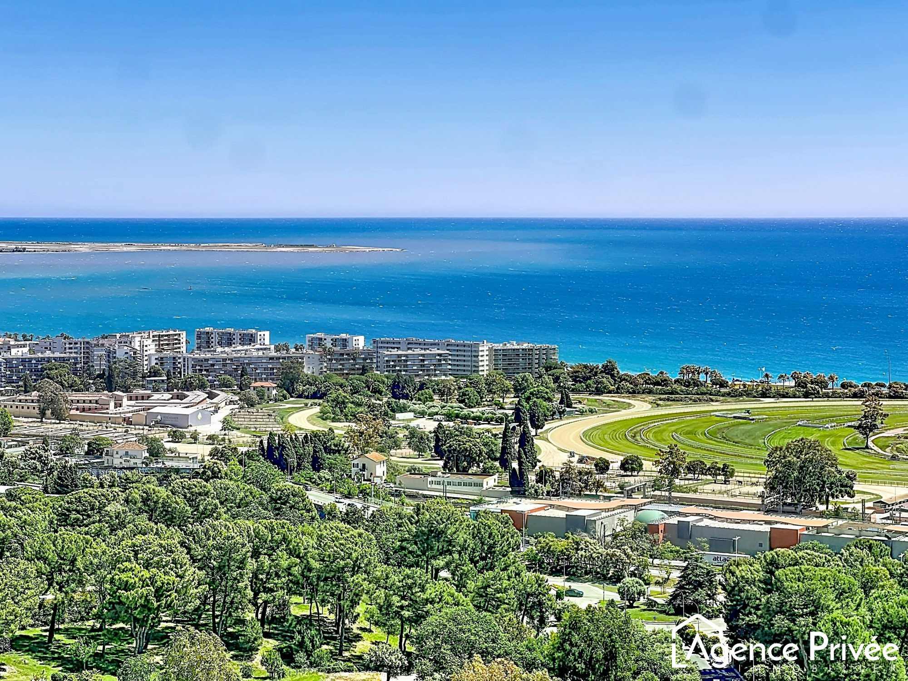

Taxes & droits
Le notaire perçoit et reverse pour le compte de l'État et des collectivités publiques les impôts et taxes dus à l'occasion de l'opération.
Transparence & information
Transparence, sécurité et information au service de vos projets.
Tarifs réglementés
La profession notariale est soumise à un tarif réglementé fixé par les pouvoirs publics. Les émoluments applicables à de nombreux actes sont identiques pour tous les notaires de France.
La loi n°2015-990 du 6 août 2015, le décret n°2016-230 du 26 février 2016, l’arrêté du 26 février 2016, l’arrêté du 28 février 2020 et l’arrêté du 25 février 2026 fixent les tarifs réglementés des notaires.
Cagnes-sur-Mer
Chaque dossier est unique. Notre office vous accompagne avec pédagogie afin de distinguer les taxes, les débours, les émoluments et les honoraires applicables à votre situation.
La rémunération du notaire
La somme que l’on verse au notaire, que l’on nomme communément et improprement « frais de notaire », comprend en réalité les taxes, les déboursés et la rémunération du notaire.
Le notaire perçoit et reverse pour le compte de l'État et des collectivités publiques les impôts et taxes dus à l'occasion de l'opération.
Les débours correspondent aux sommes avancées par le notaire pour obtenir les documents, états, renseignements et formalités nécessaires au dossier.
Ils constituent la rémunération de l'office notarial pour la réalisation de sa mission, l'authentification des actes et le conseil apporté.
Les émoluments correspondent à une somme calculée sur la base d’un pourcentage et à une somme forfaitaire par formalité accomplie, le tout fixé par décret par le gouvernement.
Ils sont identiques pour tous les notaires de France et s’appliquent à la majorité des actes authentiques.
Contrairement aux émoluments, qui sont fixés par l'État, les honoraires sont librement déterminés entre le notaire et son client.
Avant toute intervention donnant lieu à honoraires, l'office informe préalablement le client des modalités de rémunération applicables.
Transparence
L'office s'engage à informer préalablement chaque client du coût de son intervention lorsqu'une prestation relève d'honoraires librement convenus.
La transparence constitue un élément essentiel de la relation de confiance entre le notaire et son client.

Simulateurs
Vous envisagez un achat immobilier et souhaitez obtenir une estimation du coût global de votre acquisition ?
Le simulateur proposé par les Notaires du Grand Paris permet d'obtenir une estimation indicative des frais d'acquisition.
En savoir plus
Pour obtenir davantage d'informations sur le fonctionnement du tarif notarial, des émoluments et des honoraires, vous pouvez consulter la page d'information des Notaires de France.
Office Notarial de Cagnes-sur-Mer
Notre office vous accompagne avec pédagogie et transparence dans la compréhension des frais liés à votre projet.